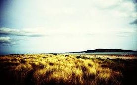

Updates
... when a group of students in Vienna, Austria, stumbled upon the Lomo Kompakt Automat – a small, enigmatic Russian camera. Mindlessly taking the shot from the hip, and sometimes looking through the viewfinder, they were astounded with the mindblowing photos that it produced – the colours were vibrant, with deep saturation and vignettes that framed the shot – it was nothing like they had seen before! Upon returning home, friends wanted their own Lomo LC-A, igniting a new style of artistic experimental photography that we now know as Lomography!
About Harkness
... that ensued upon the introduction of Lomography, they flew to St. Petersburg to work out a contract for the worldwide distribution of this fantastic little camera. Soon, the 10 Golden Rules was set up as a guide to this analogue movement, followed by exhibitions, world congresses, parties, installations, collaborations, and events. New products, films, and accessories were developed, and Lomography.com served as the communication hub for Lomographers worldwide. At the same time, Lomography Gallery Stores were put up worldwide.
Contact
... we are a globally active organisation dedicated to experimental and creative visual expression, a playful combination of lo-tech and hi-tech, and a cultural institution involved in commercial photographic and design company. We are dedicated to the unique imagery and style of analogue photography, and will continue to contribute to its development!